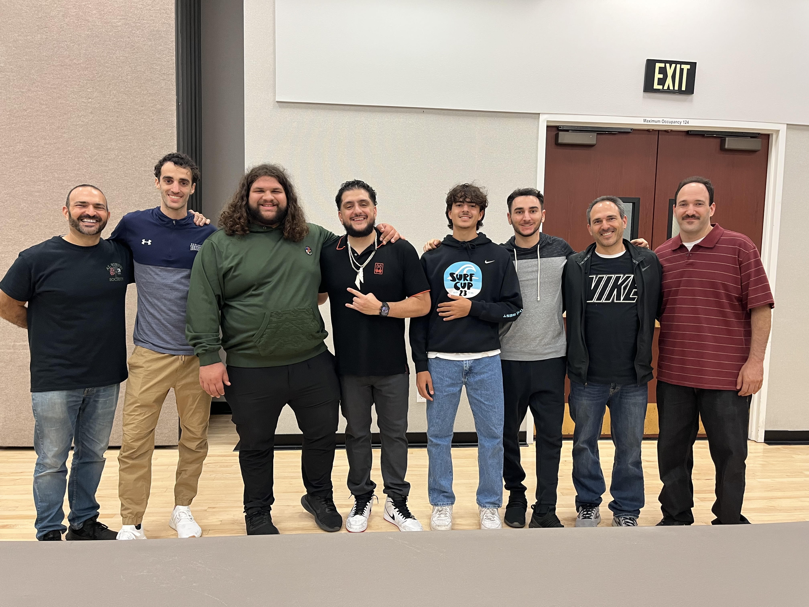
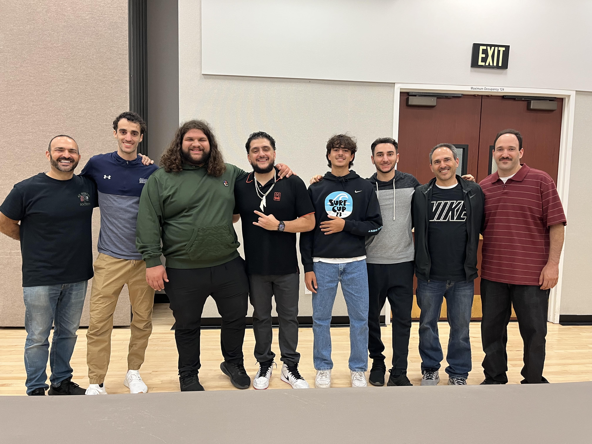
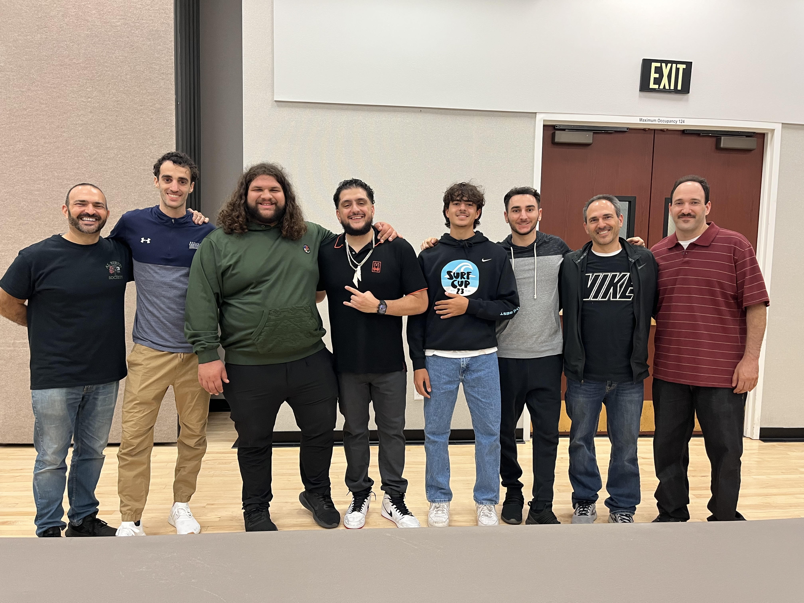

Faisal Bahhour
My name is Faisal Bahhour and I am a soccer player, entrepreneur, student, and a working man. Some of my professional experiences that I've had in the past was starting up a window business specifically window cleaning. This is where I go around door to door and try to sell people for me to clean their windows for some money. I've also done couch flipping, which is something most people don't even know about. This is where I go around and pick up old beat up couches that people don't want and I go and refurbish them and then I go sell them. I currently go to UCR where I am pursuing a degree in finance. I'm very into math and numbers and I think becoming maybe something like a financial advisor would be fun and something I can look forward to in the future. I've also tried to do some personal online businesses, such as Drop Shipping and copywriting. Drop Shipping is something that could become very successful if done correctly. I'm still learning about it and I'm still trying to do it, however it is starting to become oversaturated. One of my favorite things to do is to play soccer. I have played soccer for almost my whole life and I want to continue playing soccer for as long as I can. Currently I'm on a semi-pro soccer team. I'm trying to rank my way up all the way to the big leagues and hopefully I can make it there one day. In the past I've been a scorekeeper for this youth basketball organization where I would keep track of the scores of the players, the fouls and the points. And then after that I got a job at my uncle's convenience store where I was to stock shelves, be the cashier, and clean the store at night before we would close down. I was working there for quite a while until I got a new job at this new car wash. At this car wash my job is to sell memberships to people and try to make my way up the ladder. We don't personally clean the cars, it goes through a machine. I have to wear a formal outfit but with a button-up shirt and a tie and have a clean shaved face. Since I love soccer so much I would volunteer at the Bobby Brown soccer fields quite often. I would help out by spray painting the lines in the mornings, setting up the nets, and picking up trash during the day. I've also been in the snack bar where I help people pick up what they need and be the cashier. I've lived in Riverside for my whole life and my ethnicity is Palestinian. I am also a Muslim and I have very strong religious beliefs. Now all I'm doing is just working, going to school and playing soccer and I got a very busy schedule with all those things included so I'm just trying to keep up.
Experience
Scorekeeper
• Scorekeeper for a youth basketball organization
• Kept track of the fouls, points, timeouts
• Set up training camps
Cashier
• Responsible for checking out customers
• Cleaned up in between customers
• Produced money orders
Car Wash
• Tried to sell memberships to new customers
• Made sure people got their towels and dash wipes
• Directed people into the car wash itself
Education
UC Riverside
University of California Riverside
University of California Riverside
Portfolio
.jpg)
.jpg)
.jpg) 

